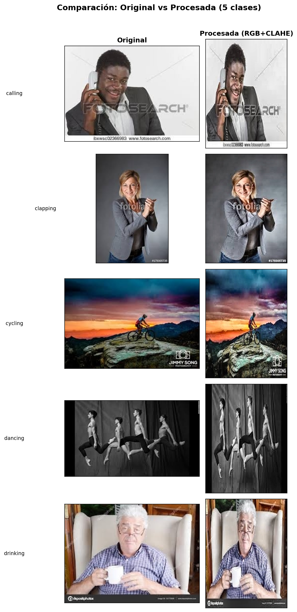

🔧 Adecuación de Imágenes — Dataset HAR
Transformación y normalización del dataset
| # | Sección | Descripción |
|---|---|---|
| 1 | Objetivo | Qué hace este script |
| 2 | Tamaño objetivo | Cálculo del tamaño estándar |
| 3 | Filtrado por tamaño | Descarte de imágenes muy pequeñas |
| 4 | Balance de clases | Oversampling para equilibrar clases |
| 5 | Pipeline de procesamiento | Resize + CLAHE (LAB) + RGB |
| 6 | Ejemplos visuales | Antes vs después, pipeline paso a paso |
| 7 | Resultados | Resumen numérico |
| 8 | Cómo ejecutar | Instrucciones de ejecución |
El script data_adecuate.py toma las imágenes originales
del dataset HAR (datos_har/dataset/) y genera una versión
procesada en datos_har/dataset_tr/, aplicando:
Se utiliza un tamaño fijo de 288 × 384 píxeles, que coincide con la resolución de entrada del modelo (384×288 HxW). Esto elimina el doble resize que ocurría con el tamaño antiguo (256×192).
| Dimensión | Promedio real | Tamaño fijo |
|---|---|---|
| Ancho | 260.4 px | 288 px |
| Alto | 196.6 px | 384 px |
El tamaño objetivo es 288 × 384 píxeles (W × H).
Se descartan todas las imágenes cuyo ancho o alto sea menor al umbral mínimo (128×128). Esto permite incluir la mayoría de imágenes del dataset, aceptando tanto downscale como upscale moderado.
| Métrica | Valor |
|---|---|
| Imágenes totales | 12,600 |
| Imágenes válidas (≥ 128×128) | 12,510 |
| Imágenes descartadas | 90 (0.7%) |
Distribución por clase después del filtrado:
| Clase | Imágenes válidas |
|---|---|
| calling | 837 |
| clapping | 836 |
| cycling | 837 |
| dancing | 833 |
| drinking | 836 |
| eating | 835 |
| fighting | 834 |
| hugging | 837 |
| laughing | 838 |
| listening_to_music | 835 |
| running | 822 |
| sitting | 833 |
| sleeping | 834 |
| texting | 827 |
| using_laptop | 836 |
Tras el filtrado, las clases quedan desbalanceadas. Para mantener el equilibrio, se realiza oversampling con reemplazo (seed=42) igualando todas las clases a la clase con más imágenes.
| Métrica | Valor |
|---|---|
| Clase con más imágenes | laughing (838) |
| Imágenes por clase (post-balance) | 838 |
| Total imágenes procesadas | 12,570 (838 × 15) |
Cada imagen pasa por 3 etapas secuenciales:
Tamaño variable → 288 × 384 px
Interpolación adaptativa:
- cv2.INTER_CUBIC para upscale (imágenes más chicas que el objetivo)
- cv2.INTER_AREA para downscale (imágenes más grandes que el objetivo)CLAHE (Zuiderveld, 1994) es una extensión de la ecualización
adaptativa de histograma que limita la amplificación del contraste. La
imagen se divide en regiones (tiles) de tamaño
tileGridSize y en cada región se ecualiza el histograma
local con un límite de recorte clipLimit que previene la
amplificación excesiva de ruido. El límite de recorte \(\beta\) controla la máxima amplificación
permitida:
\[\beta = \frac{N_{\text{pixels\_por\_tile}}}{N_{\text{bins}}} \times \text{clipLimit}\]
Con clipLimit=2.0 y tiles de 8×8 en una imagen de
288×384 px, cada tile tiene aproximadamente \(\frac{288 \times 384}{8 \times 8} \approx
1{,}728\) píxeles, resultando en \(\beta \approx \frac{1728}{256} \times 2.0 \approx
13.5\). Los bins del histograma local que superen este umbral se
recortan y redistribuyen.
clahe = cv2.createCLAHE(clipLimit=2.0, tileGridSize=(8, 8))datos_har/dataset_tr/_dupNComparación lado a lado de imágenes originales vs procesadas para 5 clases:

| Métrica | Valor |
|---|---|
| Tamaño objetivo | 288 × 384 px |
| Umbral mínimo | 128 × 128 px |
| Imágenes originales | 12,600 |
| Descartadas (menor a umbral) | 90 |
| Post-oversampling por clase | 838 |
| Total procesadas | 12,570 |
| Clases | 15 |
| Carpeta de salida | datos_har/dataset_tr/ |
| Formato de salida | RGB (3 canales) |
# Desde la raíz del proyecto (tp_ml/)
.\har_ml_env\Scripts\Activate.ps1
python data_trans/data_adecuate.pyRequisitos: opencv-python-headless,
numpy, pandas, Pillow,
tqdm, matplotlib
Las imágenes procesadas se guardan en
datos_har/dataset_tr/ y los gráficos de ejemplo en
data_trans/output/.
Documento generado como parte del proyecto de Machine Learning — Adecuación del dataset HAR